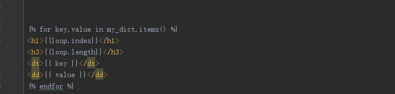

变量
{ { 变量 } }：装载一个变量，模板渲染的时候，会使用上下文传过来的变量值
模板中定义变量：
模板中添加变量，可以使用（set）语句。
全局变量
{% set name='python' %}
之后就可以在页面文件中使用name这个变量了。在解释性语言中，变量的类型时运行时确定的，因此，这里的变量可以赋任何类型的值。
局部变量
可以使用with语句来创建一个内部的作用域，将set语句放在其中，这样创建的变量只在with代码块中才有效。
{% with b = 'python' %}
{{ b }}
{% endwith %}
b变量就只能在with标签间可以使用。
控制语句
if语句：
{% if 条件1 %}
条件1成立时
{% elif 条件2 %}
条件2成立时
{% else %}
条件都不成立
{% endif %}
for 语句：
{% for i in list %}
{{i}}
{% endfor %}
字典遍历

for中添加else,如果没有数据，将会输出else内容
{% for user in users %}
<li>{{ user.username|e }}</li>
{% else %}
<li><em>no users found</em></li>
{% endfor %}
for循环内置常量
| for常量 | 作用描述 |
|---|---|
| loop.index | 当前迭代的索引（从1开始） |
| loop.index0 | 当前迭代的索引（从0开始） |
| loop.first | 是否是第一次迭代，返回True\/False |
| loop.last | 是否是最后一次迭代，返回True\/False |
| loop.length | 序列的长度 |
循环不能使用countinue和break控制循环
运算符
| 运算符 | 作用描述 |
|---|---|
| + | 可以完成数字相加，字符串相加，列表相加。但是并不推荐使用+运算符来操作字符串，字符串相加应该使用~运算符 |
| - | 只能针对两个数字相减 |
| / | 对两个数进行相除 |
| % | 取余运算 |
| * | 乘号运算符，并且可以对字符进行相乘 |
| ** | 次幂运算符，比如2**3=8。 |
| in | 跟python中的in一样使用，比如true返回true。 |
| ~ | 拼接多个字符串，比如HelloWorld将返回HelloWorld。 |
在jinja2模板中是支持直接运算的，